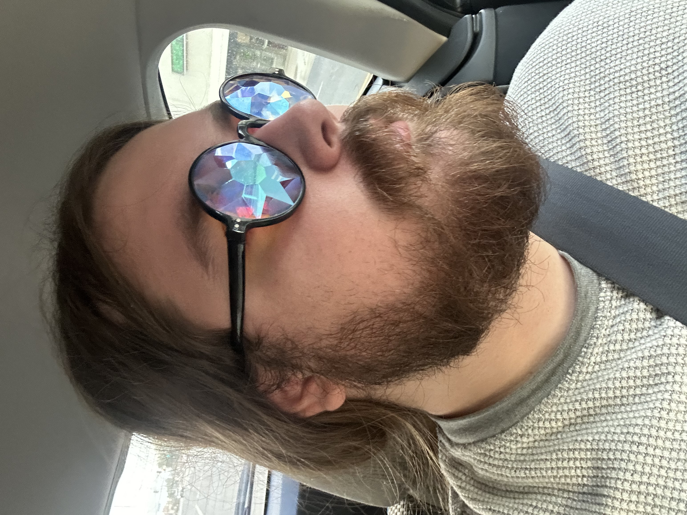
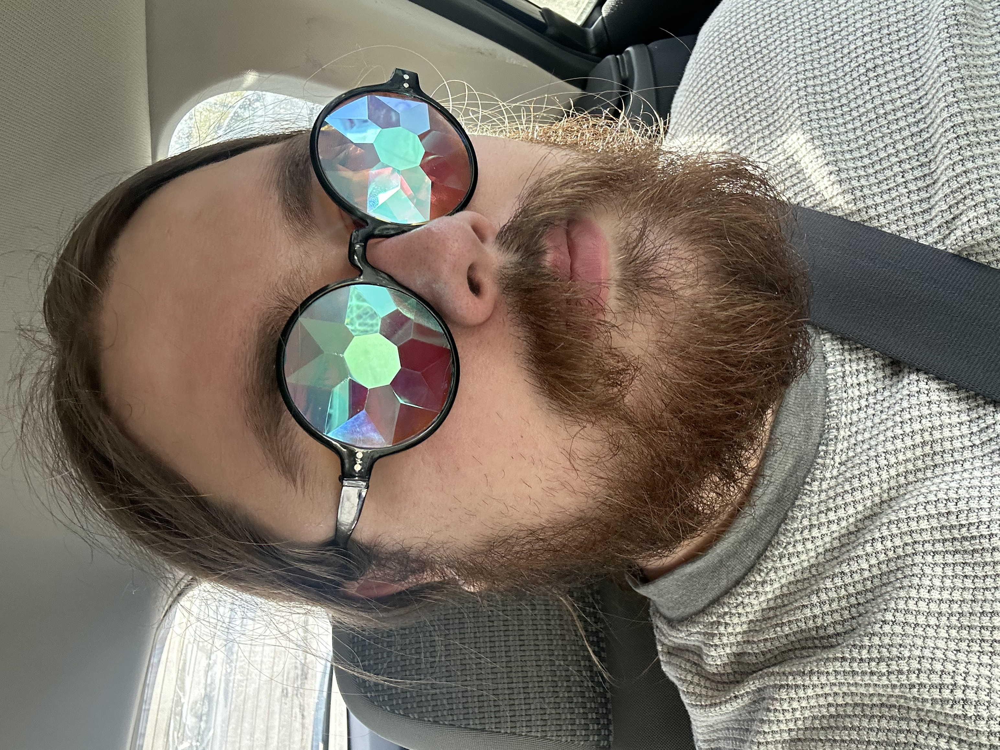

Hi! I'm David, a PhD student studying cognitive science at the
École Normale Supérieure – Paris Sciences et Lettres (ENS-PSL). I'm advised
by Brent Strickland (of the
Institut Jean Nicod
) and Sharon Peperkamp (of the Laboratoire de Sciences Cognitives et
Psycholinguistique); my école doctorale is the ED3C
of the Sorbonne.
You can find my current CV
here.
Broadly, I am interested in perceptual,
linguistic, and conceptual processes.
What are the connections between how we see (/hear, /feel, etc.),
talk about, and think about objects and
events in the world? How do these mental domains shape (or diverge from) each
other? What homologies (and dishomologies) exist between them? How should we
define them in the first place?
Cognitive scientists have yet to form a consensus about the answers to those
questions, but we're working on it. To do so, I draw on methodological and
theoretical constructs from cognitive psychology, (psycho-)linguistics,
vision science, computational modeling, and philosophy, among other disciplines.
contact me: david.schwitzgebel@ens.psl.eu
Academic publications
Schwitzgebel, D., Falck., A., Decroix, J., Strickland, B., Papeo, L., & Wittenberg, E. (in press). Encapsulation of the visual perception of social events from semantic priming.
Journal of Experimental Psychology: Human Perception & Performance [
preprint]
Schwitzgebel, D., & Peperkamp, S. (accepted). Linguistic typology and learning biases: a study of syllable-copy reduplication across modalities.
Glossa: Psycholinguistics
Guan, C.
*, Schwitzgebel, D.
*, Firestone, C., & Hafri, A. (2026). Part-whole effects in visual number estimation.
Attention, Perception, & Psychophysics [
paper]
*co-first authors
Schwitzgebel, E., Schwitzgebel, D., & Strasser, A. (2023). Creating a large language model of a philosopher.
Mind & Language [
preprint] [
paper]
Manuscripts
Schwitzgebel, D., Rissman, L., & Strickland, B. (under review). The conceptual prominence of the core Agent/Patient distinction is enhanced by grammatical context.
Schwitzgebel, D., Strickland, B., & Hafri, A. (in prep). Causal transfer beyond force: Rapid inference of property inheritance from Agent to Patient in causal events.
Schwitzgebel, D., Kuhn, J., Hafri, A., Strickland, B., Peperkamp, S., & Winter, B. (in prep) Spatiotemporally iconic boundaries: crosslinguistic transparency of the telic/atelic and count/mass distinctions
Presentations & peer-reviewed conference proceedings
Schwitzgebel, D., Strickland, B., & Hafri, A. (2026). Causal property transfer: A new perceptual event type constrained by intuitive physics [poster presentation].
VSS: Vision Sciences Society, 2026.
Schwitzgebel, D. & Hafri, A. (2025). Causal transfer beyond force: Rapid inference of property inheritance from Agent to Patient in causal events [poster presentation].
VSS: Vision Sciences Society, 2025. [
abstract]
Schwitzgebel, D. & Hafri, A. (2025). Causal transfer beyond force: Rapid inference of property inheritance from Agent to Patient in causal events [poster presentation].
SPP: Society for Philosophy & Psychology, 2025.
Schwitzgebel, D. Falck, A., Decroix, J. Strickland, B., Papeo, L., & Wittenberg, E. (2024). Encapsulation of the Visual Perception of Social Events from Semantic Priming [poster presentation].
SPP: Society for Philosophy & Psychology, 2024.
Schwitzgebel, D. Falck, A., Decroix, J. Strickland, B., Papeo, L., & Wittenberg, E. (2024). Encapsulation of the Visual Perception of Social Events from Semantic Priming [talk].
ESPP: European Society for Philosophy & Psychology, 2024.
Schwitzgebel, D., Rissman, L., & Strickland, B. (2023). Accessibility of Agent and Patient roles is shaped by context [poster presentation].
Proceedings of the Annual Meeting of the Cognitive Science Society, 45. [
abstract]
Schwitzgebel, D., Rissman, L., & Strickland, B. (2023). Accessibility of Agent-Patient thematic roles depends on context. [poster presentation].
SPP: Society for Philosophy & Psychology, 2023.
Schwitzgebel, D., Rissman, L., & Strickland, B. (2022). Context-dependent conceptual prominence of the Agent-Patient distinction [talk].
AGORA – Workshop on Agents, Objects & Relations.
Decroix, J., Falck, A., Schwitzgebel, D., Papeo, L., Strickland, B. & Wittenberg, E. (2022). Linguistic effects on rapid visual processing of social scenes [poster presentation].
Architectures and Mechanisms of Language Processing.
Schwitzgebel, D., Guan, C., Hafri, A., & Firestone, C. (2022). Possible objects count: An influence of possibility on perceived numerosity [talk].
Langage, pensée et perception—Centre atlantique de philosophie, Université de Nantes.
Guan, C., Schwitzgebel, D., Hafri, A., & Firestone, C. (2020). Possible objects count: Perceived numerosity is altered by representations of possibility [poster presentation].
Vision Sciences Society 2020, Virtual Conference. [
abstract]
Book chapters
Schwitzgebel, D. & Schwitzgebel, E. (2023). Uncle Iroh, from Fool to Sage -- or Sage All Along? in J. De Smedt, H. De Cruz, W. Irvin, and A. Ehasz, eds., Avatar: The Last Airbender and Philosophy, Blackwell.
Most of my experiment materials -- code, analyses, stimuli, data, etc. -- are available on OSF. Feel free to contact me for any unavailable materials or code snippets. Feel especially free to contact me if you notice any major errors, bugs, and/or ways to improve these materials.
Besides the materials available on OSF, demos for some of my projects are available at:
Part-whole effects in visual number estimation (with Chenxiao Guan, Chaz Firestone, & Alon Hafri)
Causal property transfer: A new perceptual event type constrained by intuitive physics (with Brent Strickland & Alon Hafri)
I mostly use GitHub for private projects, but I have a few public repos available here.


CONSTELLATOR
Open the page and wait a while. Reload and repeat to reconstellate.
OBFUSCATOR
Use this to "improve" any written material.
O
Open this and press "O" (the letter, not the number). Try pressing other keys, too.
ZAPPER
Click and hold to zap (mouse recommended).
SCREAM
Scream into the void (microphone required).